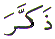
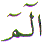

The position of the letter Zal () in the normal Arabic character set is 9. In the Abjad format it is the 25th letter with numerical value equal to 700. This article is about the spiritual meaning of the letter Zal ().
The Letter Zal () is not a Muqattaat Letter (Letters used in the the opening verses in the Quran). The Letter Zal () is for Zikr (Remembrance of) Allah.
After the Opening chapter in the Quran (Al Fatihah) which is prayer to Allah for guidance, the second chapter Al Baqara is the start of guidance from Allah. The guidance starts as follows:
The first verse above is three letters of Arabic. For most of us these three letters do not make any obvious sense. They do not spell out any obvious Arabic word. The second verse is where an actual sentence starts. It starts with the letter Zal (). The 'obvious' guidance, and the entire of obvious Quran for that matter, starts with the letter Zal (). Why does the 'obvious' guidance start with the Letter Zal () ?
The word to Remind Zakkr starts with the Letter Zal (). The Quran has been sent to Remind.
To Remind is: to cause to Remember.
To Remember is: to have in the Memory.
That implies that we already have the Message of the Quran in our memory. We need to be reminded. Hence we refer to the Quran to refresh our memory.
As we become aware of the physical world, we forget the spiritual world. This happens from birth onwards. We all need a reminder. Hence the Quran has been sent as a Reminder.
We asked: Why does
the 'obvious' guidance start with the Letter Zal ()
? Why not with the Letter Alif ( ) or
Noon (
) or
Noon ( ) Ha (
) Ha ( )
for Hazal Kitab, or any other Letter for that matter?
)
for Hazal Kitab, or any other Letter for that matter?
It starts with the Letter Zal () to emphasise that we need to use all 7 openings in the head. The 7 is derived from the position of the Letter Zal () in the Abjad format (25th letter = 2 + 5 = 7). In the normal Arabic character set, it is positioned 9. There is no number larger than 9. It is the completion of numbers. Therefore we need to use the 7 openings in our head (eyes, mouth, ears and nose) and pay total attention so that the deeper meanings of the Quran will unfold.
Firstly, look carefully
at the Quran with our eyes. Next recite the Quran so that we can
hear it ourselves with our ears. Finally control our breathing
rhythmically to the recitation of the Quran ( )
)
7(openings) x 100 ( ) = 700 () .
) = 700 () .
Indeed, why not start
with the Letter Zal ()? We need to examine the first
verse of Chapter 2 for the answer. That is the three Letters:
Alif ( ) Laam ()
Meem (
) Laam ()
Meem ( ). Why ?
). Why ?
Allah draws our attention
to the three letters in the previous verse:
Alif Laam Meem 
THAT is the Book....
Why does Allah draw our attention to those letters ? Allah wants
us to understand something. Understand what ? To understand why
the 'obvious' guidance starts with the letter Zal (). To understand the reason behind
using the Letter Zal () is as follows:
If we add the numerical value of THAT Book, which is the Letters Alif Laam Meem we get 71:
Alif ( = 1) + Laam ( = 30) + Meem (
= 1) + Laam ( = 30) + Meem ( = 40) = 71.
= 40) = 71.
We all know that the Quran Majeed is a Treasure. The Quran is Treasure of both obvious and secret Knowledge.
If we multiply the numerical
value of Alif Laam Meem 71 by 10 for Knowledge (Letter Ya = 10) we get (71 x 10 = ) 710.
= 10) we get (71 x 10 = ) 710.
There is no single Letter
with the value 710. Hide the spiritual Secret Knowledge (Letter
Ya  = 10) from the result and leave
the obvious Knowledge and guidance openly:
= 10) from the result and leave
the obvious Knowledge and guidance openly:
710 - 10 ( )
= 700 = Zal ().
)
= 700 = Zal ().
Therefore Zalikal Kitab and NOT Hazal Kitab.
The Quran is a Treasure. No wonder, we are advised to read it often. The Quran is a Treasure that is available only to certain trusted few. The Treasure is entrusted to those who will not abuse its Power, but use it for the good of mankind to help those in need. Just as we need to lock our valuables to stop any theft, so has Allah locked up the Treasures in the Quran to stop unscrupulous people abusing the Power of Quran.
And as stated in Verse 79 Chapter 56 above:
There are two kinds of cleanliness. The physical cleanliness and the spiritual cleanliness. Both types of cleanliness are required to TOUCH the (Book kept) HIDDEN. Which is the spiritual meaning of the Quran. The physical cleanliness is the removal of impurities from the physical body and clothing. The spiritual cleanliness is removing the filth of arrogance, pride and hatred.
The Quran is like a Seed. Start with Bismillah In the Name of Allah, and find the Guidance in the Quran. The Guidance turns from a seed into a flower. The Guidance becomes clear if Allah Wills. The Guidance in the Quran is a Means, to approach Allah. To approach Allah is not easy, only those who humble themselves can approach Him Insha Allah.
| BACK |